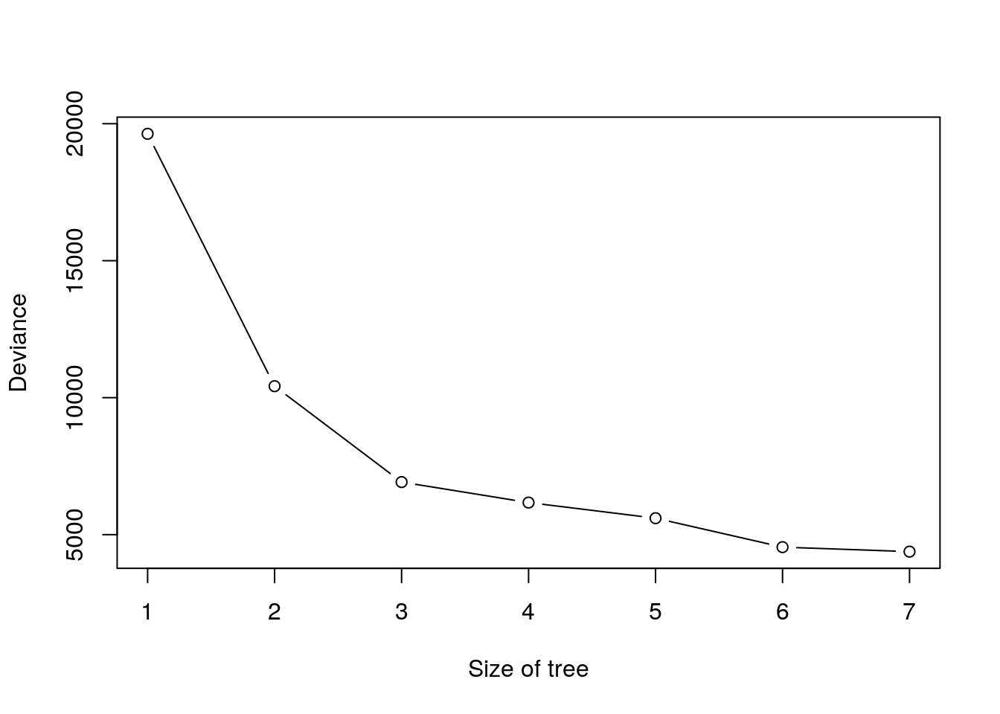

Chapter 1 Regression Trees
Let’s start with a simple model setting. Consider we have a continuous response variable \({\bf y}=(y_1,y_2, \ldots, y_n)\) and one predictor \({\bf x}= (x_1, x_2, \ldots, x_n)^{{\top}}\).
The decision tree starts with splitting the predictor \({\bf x}\),
- We partition \({\bf x}\) into two distinct regions \(R_1(s) = \{{\bf x}|{\bf x}<s\}\) and \(R_2(s) = \{{\bf x}|{\bf x}\geq s\}\).
- Since all observations are divided into two regions \(R_1(s)\) or \(R_2(s)\), we make the same prediction for each region with \[ \hat y_{R_1}=\frac{1}{n_1}\sum_{i:x_i\in R_1} y_i,\] \[\hat y_{R_2}=\frac{1}{n_2}\sum_{i: x_i\in R_2} y_i,\] where \(n_1\) and \(n_2\) are number of observations in \(R_1\) and \(R_2\), respectively.
The question is how to determine the value of cutpoint \(s\) to partition \({\bf x}\) into \(R_1\) and \(R_2\).
From the step 1), We hope this splitting can minimize sum of squares within regions of \({\bf y}\). This leads us to consider a classic criterion, residual sum of squares (RSS): \[ RSS = \sum_{j=1}^{2}\sum_{i:x_i\in R_j(s)}(y_i - \hat y_{R_j})^2. \]
Therefore, in the general model setting (consider \(p\) many predictors \({\bf x}_j\) for \(j=1,2,\ldots,p\)), the question is then transferred to:
For each predictor \({\bf x}_j\), find the best \(s\) value that can minimize RSS.
Among \(p\) many different RSS, choose the predictor and cutpoint \(s\) that resulting splitting has smallest RSS.
To better understand the details above, we define the pair of half-planes as \[ R_1(j,s) = \{x|{\bf x}_j<s\}\quad \text{and} \quad R_2(j,s) = \{x|{\bf x}_j\geq s\}, \] for any \(j\) and \(s\). And we search \(x_j\) and \(s\) that minimize the equation \[ \sum_{i:x_{ij}\in R_1(j,s)}(y_i - \hat y_{R_1})^2 + \sum_{i:x_{ij}\in R_2(j,s)}(y_i - \hat y_{R_2})^2. \] After this process, we split the space of a specific predictor and data into two regions or branches. Within each branch identified previously, repeat this process, seeking the pair \((j,s)\) to minimize RSS. However, we only choose one branch to split into two sub-branches that has minimum RSS compared with RSS of another branch splitting and RSS of mother splitting. Hence, at this stage, we may have three branches or two branches, because possibly no smaller RSS can be found and no further splitting occurs. This process continues until a stopping criterion is reached and obtain \(R_1, R_2, \ldots, R_J\).
1.1 Tree Pruning
1.2 Fitting Regression Trees
I use R code from the book ISLR (James et al. 2014) to illustrate the regression trees. Boston data set is used in the R package MASS.
## corrplot 0.84 loadedThe Boston data frame has 506 rows and 14 columns. This data frame contains the following variables:
| Var | Desp |
|---|---|
| crim | per capita crime rate by town |
| zn | proportion of residential land zoned for lots over 25,000 sq.ft |
| indus | proportion of non-retail business acres per town |
| chas | Charles River dummy variable (= 1 if tract bounds river; 0 otherwise) |
| nox | nitrogen oxides concentration (parts per 10 million) |
| rm | average number of rooms per dwelling |
| age | proportion of owner-occupied units built prior to 1940 |
| dis | weighted mean of distances to five Boston employment centres |
| rad | index of accessibility to radial highways |
| tax | full-value property-tax rate per $10,000 |
| ptratio | pupil-teacher ratio by town |
| black | 1000(Bk - 0.63)^2 where Bk is the proportion of blacks by town |
| lstat | lower status of the population (percent) |
| medv | median value of owner-occupied homes in $1000s |
## crim zn indus chas nox rm age dis rad tax ptratio black
## 1 0.00632 18 2.31 0 0.538 6.575 65.2 4.0900 1 296 15.3 396.90
## 2 0.02731 0 7.07 0 0.469 6.421 78.9 4.9671 2 242 17.8 396.90
## 3 0.02729 0 7.07 0 0.469 7.185 61.1 4.9671 2 242 17.8 392.83
## 4 0.03237 0 2.18 0 0.458 6.998 45.8 6.0622 3 222 18.7 394.63
## 5 0.06905 0 2.18 0 0.458 7.147 54.2 6.0622 3 222 18.7 396.90
## 6 0.02985 0 2.18 0 0.458 6.430 58.7 6.0622 3 222 18.7 394.12
## lstat medv
## 1 4.98 24.0
## 2 9.14 21.6
## 3 4.03 34.7
## 4 2.94 33.4
## 5 5.33 36.2
## 6 5.21 28.7First, a training data is created and I fit a regression tree to the training data.
set.seed(1)
train = sample(1:nrow(Boston), nrow(Boston)/2)
tree.boston = tree(medv~.,Boston, subset = train)
summary(tree.boston)##
## Regression tree:
## tree(formula = medv ~ ., data = Boston, subset = train)
## Variables actually used in tree construction:
## [1] "rm" "lstat" "crim" "age"
## Number of terminal nodes: 7
## Residual mean deviance: 10.38 = 2555 / 246
## Distribution of residuals:
## Min. 1st Qu. Median Mean 3rd Qu. Max.
## -10.1800 -1.7770 -0.1775 0.0000 1.9230 16.5800The output of summary() indicates four variables actually used in the tree construction. The number of terminal nodes is 7. deviance is RSS of the tree, which is summation of RSS in 7 terminal nodes. The Residual mean deviance = 10.38 = 2555/246, where 246 = n - # of nodes = 506/2-7. tree.boston$frame below describes the node number, var the variable used at the split (or leaf for a terminal node), n the sample size of each node, dev the deviance, yval the fitted value at the node (the mean) and cutpoints for the left and right.
## var n dev yval splits.cutleft splits.cutright
## 1 rm 253 19447.8743 21.78656 <6.9595 >6.9595
## 2 lstat 222 6794.2921 19.35360 <14.405 >14.405
## 4 rm 135 1815.7240 22.50667 <6.543 >6.543
## 8 <leaf> 111 763.1337 21.37748
## 9 <leaf> 24 256.4696 27.72917
## 5 crim 87 1553.7871 14.46092 <11.4863 >11.4863
## 10 age 61 613.8026 16.22787 <93.95 >93.95
## 20 <leaf> 30 245.7147 18.08667
## 21 <leaf> 31 164.1239 14.42903
## 11 <leaf> 26 302.7138 10.31538
## 3 rm 31 1928.9871 39.20968 <7.553 >7.553
## 6 <leaf> 16 505.4900 33.42500
## 7 <leaf> 15 317.0040 45.38000The following result is the value of dev and yval at the node 1 computed by code.
y_train <- Boston[train,]$medv
dev_yal <- c(sum((y_train - mean(y_train))^2), mean(y_train))
paste(c('dev', 'yval'), 'is', round(dev_yal,4))## [1] "dev is 19447.8743" "yval is 21.7866"## [1] "RSS of the tree is: 2555"Plot the tree. The variable rm measures average number of rooms per dwelling. The tree plot displays that more rooms correspond to more expensive houses. The tree predicts a median house price of $45380 for houses of more numbers of room.
large.rm <- Boston[train, ]$rm>=7.553
y.large.rm <- mean(y_train[large.rm])
paste('predicted value of median house price of larger house is ', y.large.rm)## [1] "predicted value of median house price of larger house is 45.38"If we go back to this example in the ISLR, we can discover that with same random seed number, we obtain different results. In ISLR, lstat is the first node, indicating the most important factor that influences the house price. This is due to different random samples we got, although we set the same random seed. Maybe random number generator in different computer is different. If we go to see the result of random forests at page 330, rm and lstat actually are 2 most important variable. On the other hand, pairwise correlation plot shows that rm and lstat has strong correlation with median of house price. Hence, with different random sample, we can obtain that either rm or lstat is at the root node.
Next I use cv.tree() function to see whether pruning the tree will improve performance.
cv.boston = cv.tree(tree.boston)
plot(cv.boston$size, cv.boston$dev, type = 'b', xlab = 'Size of tree', ylab = 'Deviance')
## $size
## [1] 7 6 5 4 3 2 1
##
## $dev
## [1] 4380.849 4544.815 5601.055 6171.917 6919.608 10419.472 19630.870
##
## $k
## [1] -Inf 203.9641 637.2707 796.1207 1106.4931 3424.7810
## [7] 10724.5951
##
## $method
## [1] "deviance"
##
## attr(,"class")
## [1] "prune" "tree.sequence"$size is the number of terminal nodes and $k is \(\alpha\).
References
James, Gareth, Daniela Witten, Trevor Hastie, and Robert Tibshirani. 2014. An Introduction to Statistical Learning: With Applications in R. Springer Publishing Company, Incorporated.